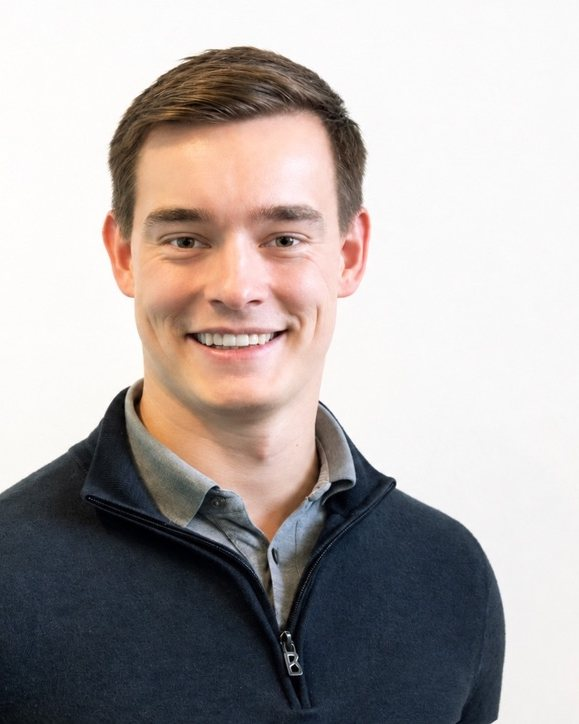

Über mich
Zwischen Krankenhausalltag und Forschung: Ich verbinde die Umsetzung von KI in einem großen Klinikverbund mit wissenschaftlicher Arbeit zu Sprachmodellen in der Medizin.

Kurzporträt
Nach Studien in Aachen und Marburg habe ich am Universitätsklinikum Marburg begonnen, Sprachmodelle für medizinische Anwendungen anzupassen und zu bewerten. Seit 2024 bringe ich diese Erfahrung bei AGAPLESION in die Versorgung, seit 2025 als Leiter des Zentralen Dienstes KI & Daten. Ich spreche Deutsch, Englisch und Italienisch und bin in meiner Freizeit Pilot.
Stationen
Projekte
DokPro: KI-Kabine für die Notaufnahme
Ein Avatar führt Patientinnen und Patienten in einer Kabine durch die Anamnese, misst Vitalwerte und übergibt einen Bericht ins Krankenhausinformationssystem. Entwickelt am UKGM Marburg, im Hessen-Ideen-Wettbewerb 2024 und auf dem DGIM-Kongress 2025 vorgestellt.
Mehr erfahrenDer virtuelle Doktor auf der BUGA 23
Eine Telefonzelle auf der Bundesgartenschau Mannheim, in der Besucherinnen und Besucher mit einem KI-Arzt sprechen konnten. Grundlage für Forschung zu Vertrauen in medizinische Sprachmodelle.
Mehr erfahrenbc video
Ein kleines Startup für KI-gestützte Aufklärungsvideos für Patientinnen und Patienten, auf Basis von Leitlinien und mit ärztlicher Freigabe.
Mehr erfahrenPublikationen
Eine Auswahl wissenschaftlicher Arbeiten.